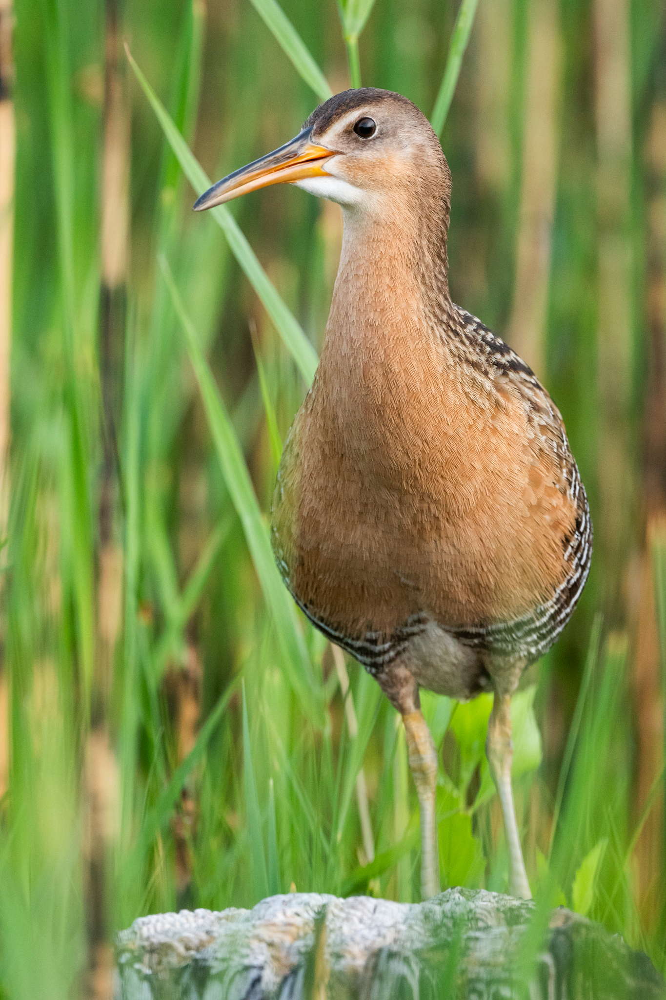
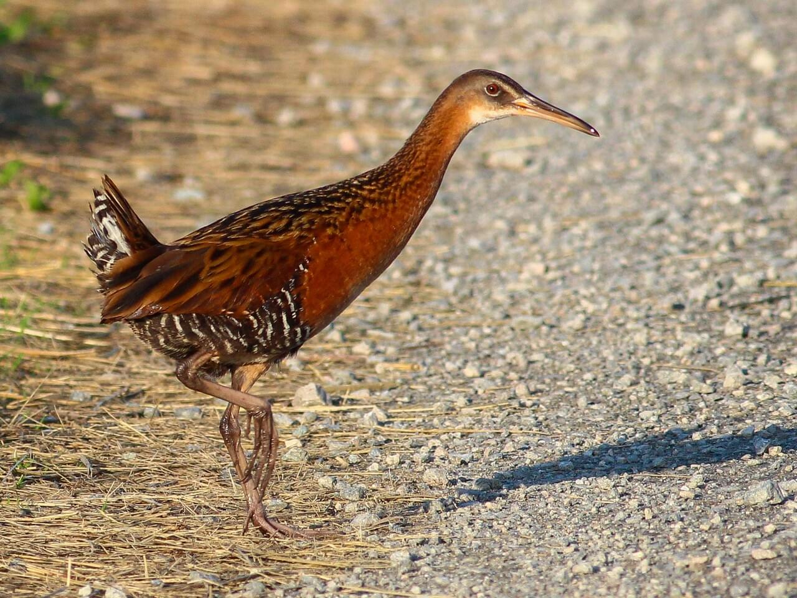
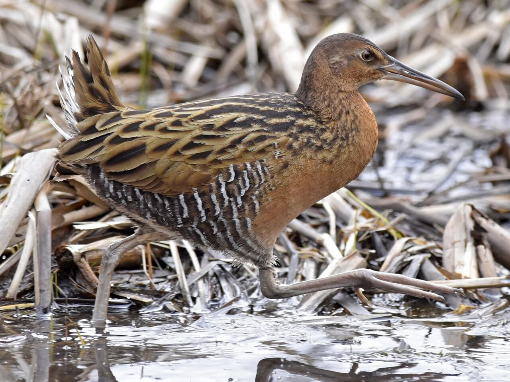
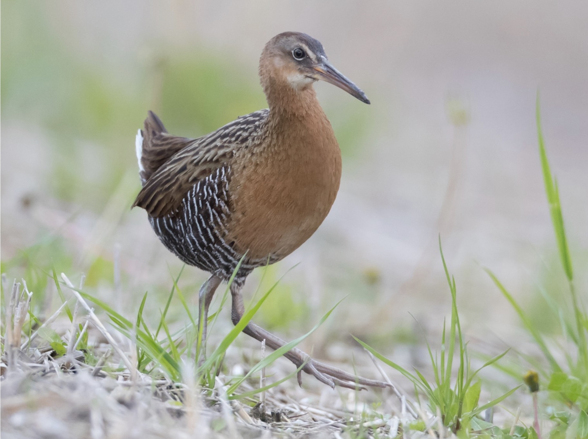
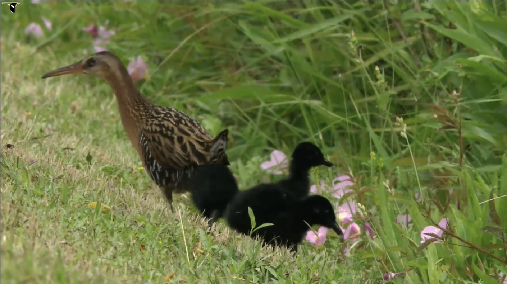

Rallus elegans , also known as the King Rail , is an endangerged species in PA
SPECIES is Endangered in Pennsylvania. This is likely attributed to King rails not being common in Pennsylvania in the first place, but Game Commission annual reports indicate the bird today is even more rare than it was historically as well as:
The king rail is so named because of its large size and bright coloration. This plump chicken-sized bird weighs almost a pound and is a bright rusty color. They range from 15 to 19 inches in height and have 21 - to 25 -inch wingspans. The king rail is more than twice the size of the similar, and more common, Virginia rail (Rallus limicola). Males are larger than females. Bills are long, slightly decurved, and yellow with brown tips. These birds are extremely secretive and would rather run than fly to escape detection. They are rarely seen, therefore, and are most often located by their loud calls, a resonant grunting bup-bup, bup, bup, bup, more rapid at the end. Similar to other rails, the King Rail is difficult to observe, but this large rail is noted for its striking appearance and loud vocalizations. First described by Audubon in 1835 (2), the King Rail is associated with freshwater, oligohaline, and brackish marshes, as well as rice fields. It feeds largely on crustaceans and aquatic insects in a variety of water bodies, including shallow flooded emergent vegetation, temporary ponds, creeks, and along the edge of ditches, lakes, and mudflats. The King Rail has a wide geographic distribution in the eastern United States with strongholds along the Gulf coast of Texas and Louisiana, and possibly Florida. Northern populations are migratory, but the specific overwintering locations of these populations remain unknown. Despite this broad geographic range, King Rail populations have declined alarmingly in the past 50 years with the species now listed as threatened or endangered in 12 eastern and Midwestern states, as well as in Canada. In response to these declines, research has shown that populations in the Upper Mississippi and Illinois River valleys, as well as the Midwestern U.S., are particularly scarce. These population declines likely related to the direct loss of wetlands, but evidence also indicates that King Rails are sensitive to broad-scale changes in hydrological regimes, such as the impoundment or stabilization of water levels, that have a profound influence wetland vegetation.
 Bird conservation in Pennsylvania is important because birds play a key role in keeping ecosystems healthy. They help control insect populations, pollinate plants, and spread seeds, which supports forests, farms, and natural habitats across the state. Many bird species also act as indicators of environmental health—when their numbers drop, it can signal bigger problems in the ecosystem. Protecting birds also helps preserve Pennsylvania’s natural heritage. The state is home to a wide range of bird species, including migratory birds that rely on its forests, wetlands, and fields as resting and breeding areas. By conserving these habitats, we support biodiversity and keep local environments balanced. Finally, birds contribute to the state’s economy and quality of life. Bird-watching and outdoor recreation bring in tourism, and many people simply enjoy seeing and hearing birds in their daily lives. Overall, bird conservation helps maintain healthy ecosystems, supports local communities, and protects an important part of Pennsylvania’s wildlife.
 This is the bottom.